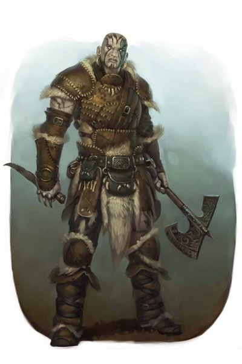

Goliath
Version officielle du Volo's Guide to Monsters de cette race publiée initialement dans l'Elemental Player's Companion.
Sur les plus hauts sommets, loin au-dessus des pentes où les arbres poussent et où l'air est raréfié et les vents glacials hurlent, habitent les goliaths solitaires. Peu de gens peuvent se vanter d'avoir vu un goliath, et encore moins peuvent prétendre avoir lié amitié avec eux. Les goliaths déambulent dans un royaume sombre de roche, de vent et de froid. Leurs corps sont comme sculptés dans la pierre de la montagne et leur donnent une grande puissance physique. Leurs esprits suivent les vents vagabonds, tels des nomades errant de sommets en sommets. Leurs cœurs sont imprégnés du regard froid de leur royaume glacial, laissant à chaque goliath la responsabilité de gagner sa place dans la tribu ou de mourir en essayant.
Esprit de compétition
Les goliaths peuvent s'avérer être de bons alliés, mais ne leur montrez jamais des signes de faiblesse. Ils sont aussi durs et impitoyables que la pierre des montagnes, et aussi froids et impitoyables que ses vents amers et glacés. Une approche basée sur la force pourrait au contraire aider à vous faire considérer comme digne d'une alliance.
- Tordek, Un guide des Pics
Chaque jour apporte un nouveau défi à un goliath. Nourriture, eau et abri sont rares dans les montagnes les plus élevées. Une seule erreur peut entraîner la perte de toute une tribu, tandis que l'effort héroïque d'un individu peut assurer la survie de l'ensemble du groupe. Les goliaths mettent en avant l'autosuffisance et la compétence individuelle. Ils ont une une compulsion à compter les points, notant leurs actions et pointant leurs réalisations pour les comparer à celles des autres. Les goliaths aiment gagner, mais ils voient la défaite comme un aiguillon pour améliorer leurs compétences. Cette passion pour la compétition a un côté sombre. Les goliaths sont des concurrents féroces, mais par-dessus tout, ils sont amenés à dépasser leurs efforts passés. Si un goliath tue un dragon, il ou elle devra ensuite en chercher un encore plus grand et plus puissant au combat. Quelques aventuriers goliaths atteignent un âge avancé, bien que la plupart trouve la mort en tentant de dépasser leurs accomplissements passés.
Fair-play
Pour un goliath, la compétition n'existe que si elle se situe dans un cadre de jeu équivalent. Ces concours mesurent le talent, le dévouement et l'effort, ces facteurs qui déterminent la survie dans leur territoire d'origine, et ne s'appuient pas sur des objets magiques, de l'argent ou d'autres éléments qui pourraient faire pencher la balance d'un côté ou de l'autre. Les goliaths comptent heureusement avec ces avantages, mais ils prennent soin de rappeler qu'un tel avantage peut toujours être perdu. Un goliath qui se repose trop sur eux peut devenir négligent, ce qui mène droit au désastre dans les montagnes. Ce trait se manifeste le plus fortement lorsque les goliaths interagissent avec d'autres personnes. La relation entre les paysans et les nobles intrigue un goliath. Si un roi n'a pas l'intelligence ou le leadership pour mener la société, il est clair que la personne la plus talentueuse dans le royaume devrait prendre sa place. Les goliaths gardent rarement de telles opinions pour eux-mêmes, et se moquent de ces pantins qui s'appuient sur les structures ou les règles de la société pour se maintenir au pouvoir.
La survie des plus forts
Parmi les goliaths, un adulte qui ne peut pas contribuer à la tribu est expulsé, et un goliath seul a peu de chance de survivre, en particulier les plus faibles et les plus vieux. Les goliaths ont peu de pitié pour les adultes qui ne peuvent pas prendre soin d'eux-mêmes, cependant une personne malade ou blessée est soignée, à cause de la notion qu'ont les goliaths du fair-play. Un goliath handicapé de façon permanente doit encore pouvoir apporter sa contribution pour la tribu. En général, un tel goliath meurt en tentant de le faire, ou il se dérobe dans la nuit à la recherche de son froid destin. À certains égards, la tendance des goliaths à se surpasser alimente l'inévitabilité sombre du déclin et de la mort. Un goliath préfère plutôt mourir au combat, à l'apogée de sa force et de son adresse, plutôt que d'endurer la lente décomposition de la vieillesse. Peu de personnes ont fait la rencontre d'un goliath vieillissant, et même ces goliaths qui ont quitté leur tribu sont aux prises avec l'envie de renoncer à leur vie comme à la décrépitude de leurs compétences physique. En raison de leurs prises de risque, les tribus goliaths souffrent d'un manque chronique d'expérience offerte par les dirigeants à long terme. Ils comptent sur la sagesse innée de leurs chefs, car ils ne peuvent que rarement compter sur la sagesse acquise avec l'âge.
Noms de goliaths
Chaque goliath a trois noms : un nom de naissance attribué par la mère et le père du nouveau-né, un surnom attribué par le chef de la tribu, et un nom de famille ou de clan. Un nom de naissance fait jusqu'à trois syllabes. Le nom de clan fait cinq syllabes ou plus et fini par une voyelle. Les noms de naissance sont rarement liés au genre. Les goliaths voient les femmes et les hommes comme égaux en toutes choses, et ils trouvent que les sociétés ayant des rôles répartis par sexe sont déroutantes ou digne de moquerie. Pour un goliath, la personne qui est la meilleure à une tache devrait être celui chargé de la faire. Le surnom d'un goliath est une description qui peut changer suivant les caprices d'un chef ou d'un aîné. Il se réfère à un acte remarquable, un succès ou un échec, commis par le goliath. Les goliaths assignent et utilisent des surnoms à leurs amis d'autres races, et le changent pour se référer aux actes notables d'un individu. Les goliaths énoncent leurs trois noms lorsqu'ils se présentent, d'abord le nom de naissance, puis le surnom, et enfin le nom du clan. Durant les conversations courantes, ils n'utilisent que leur surnom.
Nom de naissance : Aukan, Eglath, Gae-Al, Gauthak, Ilikan, Keothi, Kuori, Lo-Kag, Manneo, Maveith, Nalla, Orilo, Paavu, Pethani, Thalai, Thotham, Uthal, Vaunea, Vimak.
Surnom : Bearkiller, Dawncaller, Fearless, Flintfinder, Horncarver, Keeneye, Lonehunter, Longleaper, Rootsmasher, Skywatcher, Steadyhand, Threadtwister, Twice-Orphaned, Twistedlimb, Wordpainter.
Nom de clan : Anakalathai, Elanithino, Gathakanathi, Kalagiano, Katho-Olavi, Kolae-Gileana, Ogolakanu, Thuliaga, Thunukalathi, Vaimei-Laga.
Traits
Les goliaths partagent un certain nombre de traits en commun :
Augmentation de caractéristiques. Votre Force augmente de 2 et votre Constitution de 1.
Âge. Les goliaths ont une espérance de vie comparable à celle des humains. Ils entrent dans l'âge adulte peu avant 20 ans et vivent habituellement moins d'un siècle.
Alignement. La société goliath, avec ses rôles et ses tâches claires, a un fort penchant loyal. Leur sens de l'équité, équilibré avec un accent sur l'autonomie et la responsabilité personnelle, les pousse vers la neutralité.
Taille. Les goliaths mesurent entre 2,10 et 2,40 m et pèsent entre 140 et 220 kg. Votre taille est Moyenne (M).
Vitesse. Votre vitesse de base est de 9 mètres.
Athlète naturel. Vous maîtrisez la compétence Athlétisme.
Endurance de la pierre. Vous pouvez vous concentrer pour éviter occasionnellement une blessure. Lorsque vous subissez des dégâts, vous pouvez utiliser votre réaction pour lancer un d12. Ajoutez votre modificateur de Constitution au nombre obtenu, et réduisez les dommages de ce total. Après avoir utilisé ce trait, vous devez terminer un repos court ou long avant de pouvoir le réutiliser.
Puissamment bâti. Vous comptez comme étant plus grand d'une taille pour déterminer votre capacité de charge et le poids que vous pouvez pousser, traîner ou soulever.
Montagnard. Vous obtenez la résistance au dégâts du froid. Vous êtes aussi habitué aux hautes altitudes, y compris des altitudes supérieures à 6000 mètres.
Langues. Vous pouvez parler, lire et écrire le commun et le géant.
Traduit par Garruth